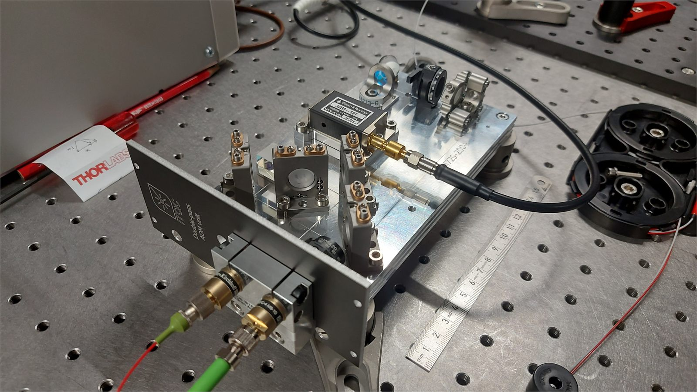
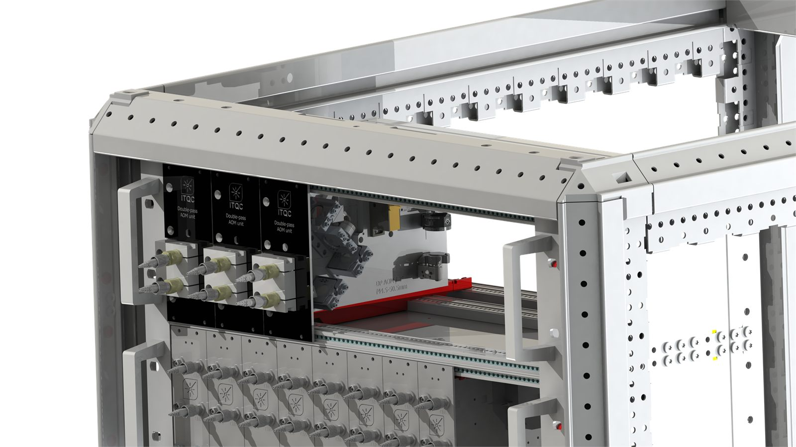
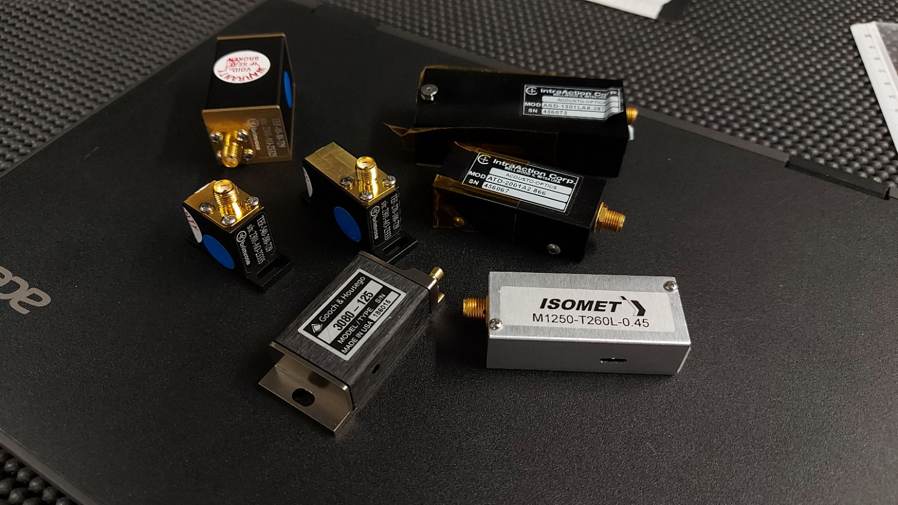
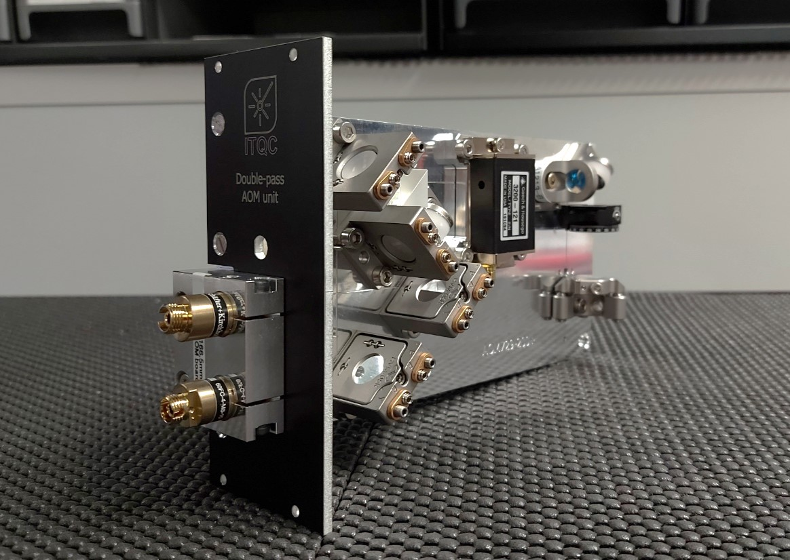

PSI / ETH Zurich internship
AOM Board for Trapped-Ion Quantum Computing
Three-month internship project on a compact double-pass acousto-optic modulation board designed for the trapped-ion quantum-computing environment at PSI and ETH Zurich.




Context
Trapped-ion quantum computing depends on a dense optical setup with many wavelengths and many beams, each requiring control over frequency, direction or intensity. Double-pass AOM architectures are a standard way to achieve that control, but conventional setups can consume a large amount of optical-table space.
What I built
My task was to prototype a compact and versatile double-pass AOM module that could be mounted on a small board, produced repeatedly, and still accommodate the range of wavelengths and configurations required by the lab. The resulting design uses a polarizing beam splitter together with a cat's-eye retroreflector, along with kinematic mirrors, rotary waveplates and custom edge stops for alignment.
The final device is rack-mountable and uses a clean fiber-based input and output interface, making it easier to deploy in a structured experimental environment.
Outcome
- Roughly a threefold size reduction compared with the previous optical-table implementations used in the lab.
- Coverage of common AOM use cases including frequency scanning, beam deflection and laser switching.
- A Bragg-angle operating range that supports wavelengths from 400 to 900 nm and RF modulation up to 300 MHz.
- A versatile platform that went on to be used both at PSI and within the TIQI group at ETH.